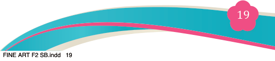
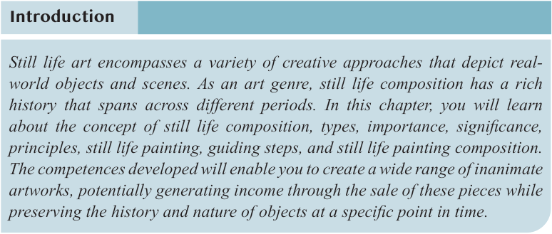
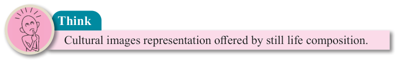
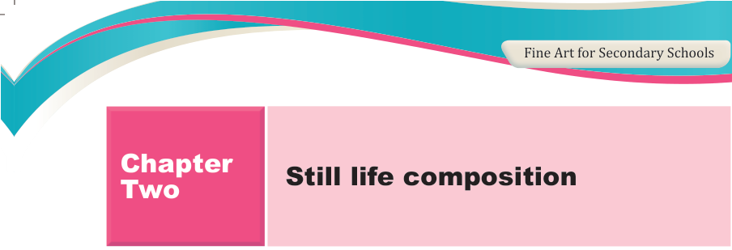

Fine Art for Secondary Schools

19

Student’s Book Form Two

Introduction
Still life art encompasses a variety of creative approaches that depict real- world objects and scenes. As an art genre, still life composition has a rich history that spans across different periods. In this chapter, you will learn about the concept of still life composition, types, importance, significance,

principles, still life painting, guiding steps, and still life painting composition.
The competences developed will enable you to create a wide range of inanimate artworks, potentially generating income through the sale of these pieces while preserving the history and nature of objects at a specific point in time.

Think

Cultural images representation offered by still life composition.
Concept of still life composition
Still life composition is a work of art that represents inanimate objects that are
found in our environment. It depicts mostly lifeless subject matter. It is an important
subject in art history. It has been practiced for a long time since the time when people started making visual arts. The feeling of recording what we love in our lives was the attitude that made artists make images of a variety of things/items that they owned. Generally, a still life composition can be man-made or natural
objects. Man-made objects are such as household items, tools and materials. Natural
objects can be the objects that were once alive but in the meantime they are no longer alive, or were naturally non-living. These include things such as flowers, fruits, vegetables, various foods and beverages, shells and rocks. These objects
are carefully selected by an artist considering the message they want to put across.
The collected objects are arranged on a surface for observation and drawing. The knowledge and practice of still life composition is very important, as it improves drawing skills and it is a great way of practising the elements and principles of art. Figure 2.1 (a-b) exemplifies a still life drawing.

Chapter
Two
Still life composition
04/08/2025 13:54